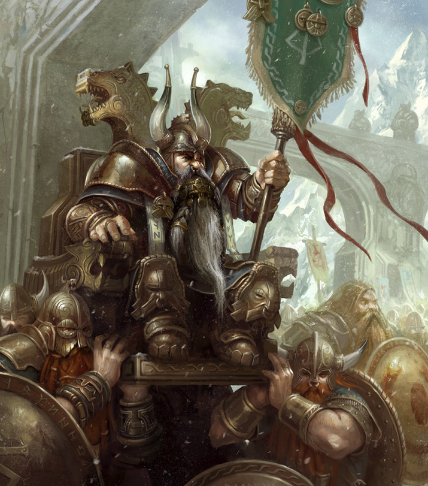

Anzelm jest namietnym czytelnikiem komiksow. Obecnie czyta Dungeons & Dragons: The Legend of Drizzt #2 - The Icewind Dale Trilogy
Drizzt Do'Urden – renegat, który uciek³ z przesi¹kniêtego okrucieñstwem i z³em œrodowiska mrocznych elfów, aby wieœæ ¿ycie na powierzchni Faerunu. Dotychczas poœwiêcono mu 23 ksi¹¿ki, z czego 18 przet³umaczono na jêzyk polski.
Drizzt jest synem najlepszego fechmistrza Menzoberranzan – Zaknafeina, który zosta³ z³o¿ony w ofierze przez Malice Do'Urden (matkê opiekunkê ówczesnego dziewi¹tego domu Menzoberranzan) – Pajêczej Królowej Lolth.
Drizzt przemierza krainy wraz z przyjació³mi: krasnoludem Bruenorem Battlehammerem, ludzk¹ kobiet¹ Catti-brie, barbarzyñc¹ Wulfgarem i nizio³kiem Regisem. Jego najwiêkszymi wrogami s¹ demon Errtu (pokonany lecz nie unicestwiony przez Drizzta) oraz skrytobójca Artemis Entreri z Calimportu, niemal dorównuj¹cy Drizztowi zdolnoœciami szermierczymi i zwinnoœci¹.
Nazwisko drowa pochodzi od nazwy domu, z którego siê wywodzi. Dawna i formalna nazwa Domu Do'Urden to Daermon N'a'Shezbaernon.
Drizzt wystêpuje w grze Baldur's Gate oraz kontynuacji tej gry Baldur's Gate II: Cienie Amn. Pojawia siê równie¿ w grze Forgotten Realms: Demon Stone.
Stworzylem ja - Anzelm.